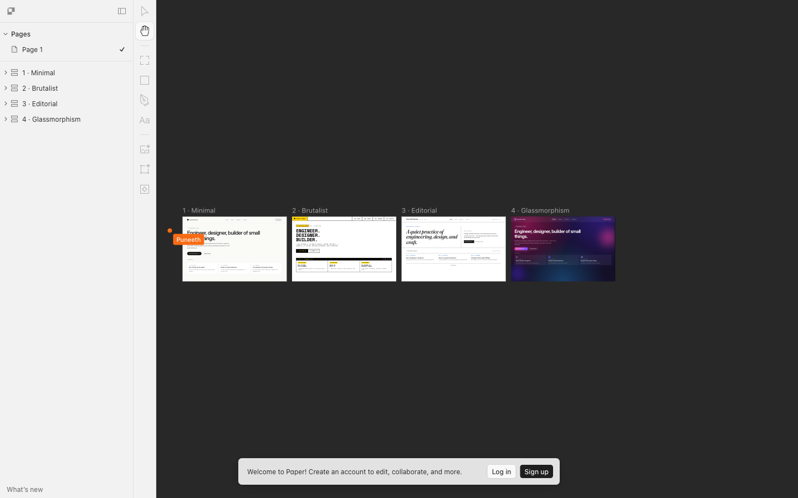
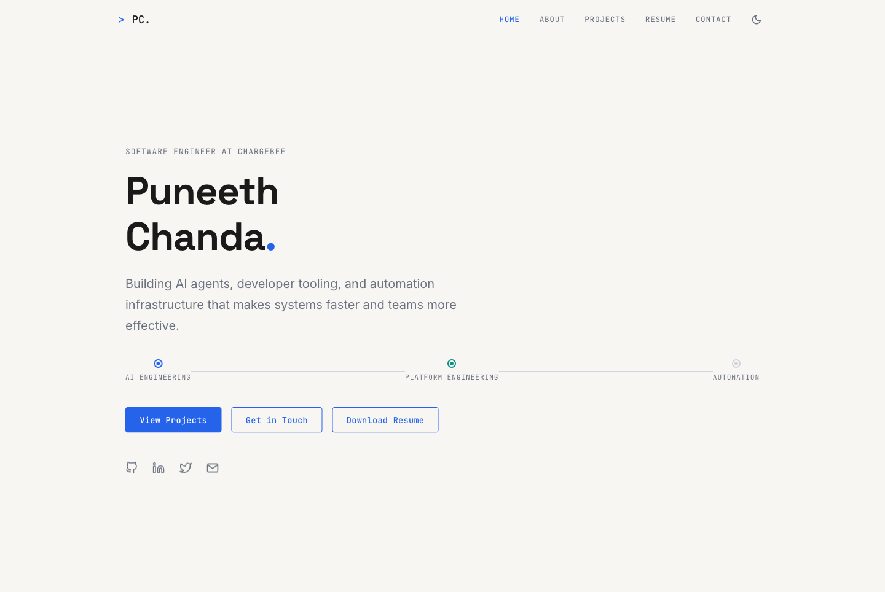
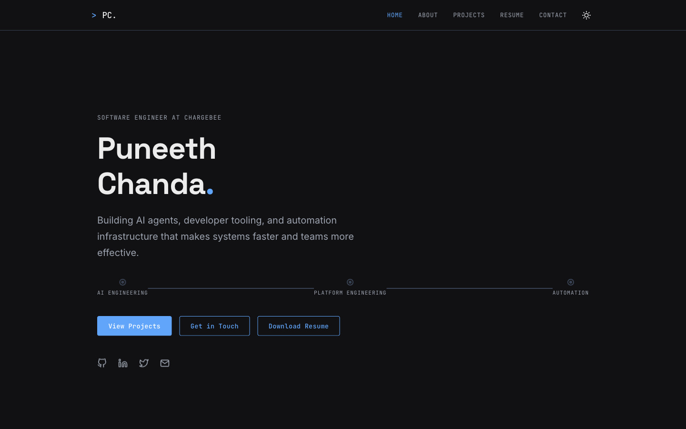
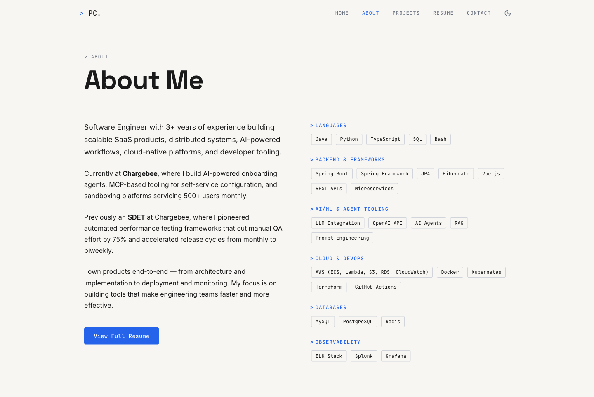
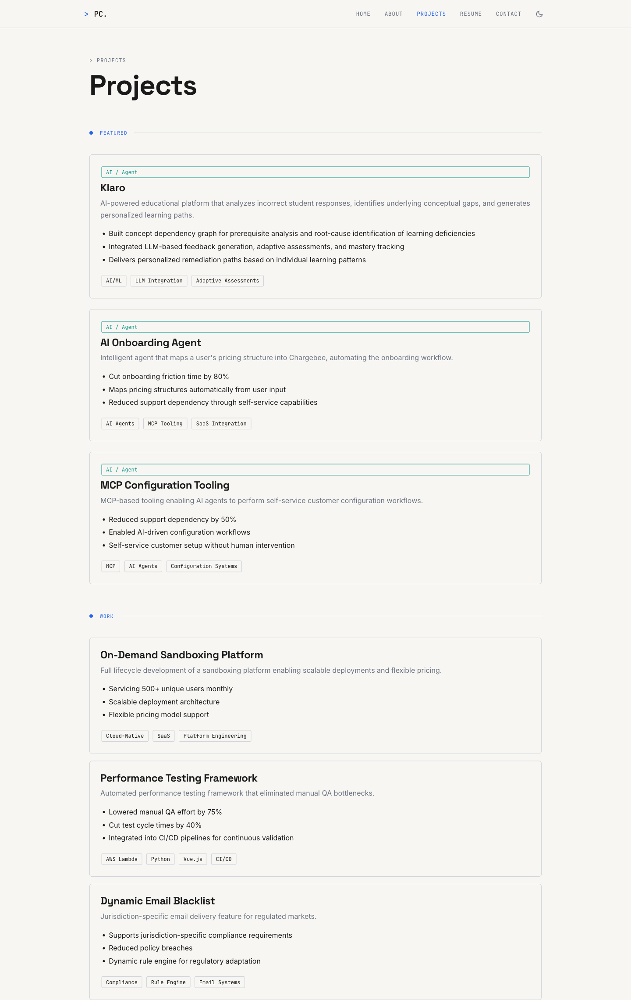
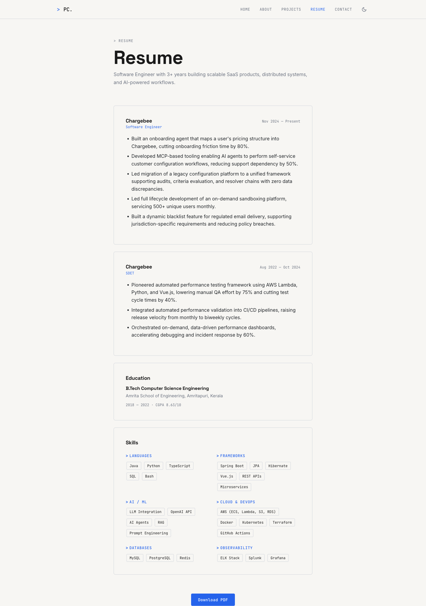
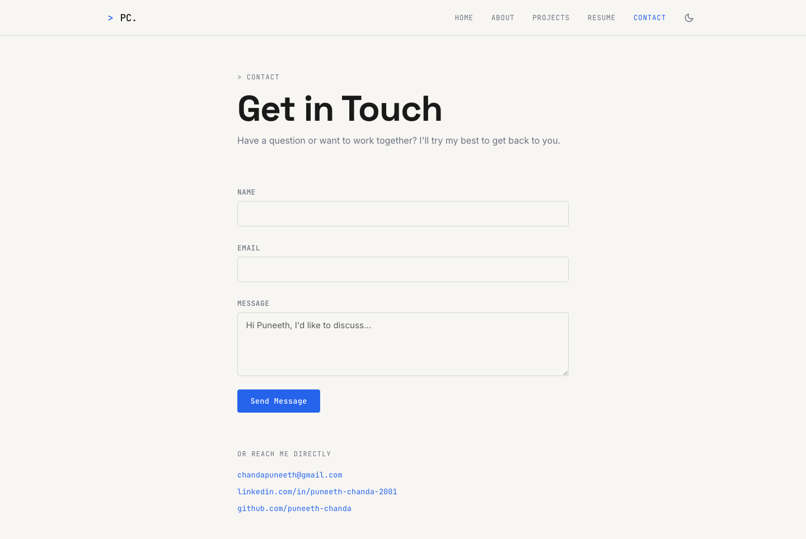

Four distinct visual concepts designed in Paper, plus a Playwright health check of the live site at puneeth-chanda.github.io. Same content, four different points of view — pick one to ship or remix.
Each artboard re-skins the same hero (name + tagline + dual CTA) and the same three-card "Currently" pipeline. Only the visual language changes — copy, hierarchy, and information density are held constant so they're directly comparable.

Visited all five routes on puneeth-chanda.github.io, collected console errors and network responses, tested the dark-mode toggle, and click-through navigation. All routes return 200, zero console errors, zero failed assets.
| Route | Status | Title | Notes |
|---|---|---|---|
/ |
200 · pass | Puneeth Chanda | Hero, 3 focus chips, 3 CTAs, 4 social links render. Nav highlights HOME. |
/about |
200 · pass | About — Puneeth Chanda | Bio + skills grid render. Six skill categories, "View Full Resume" CTA. |
/projects |
200 · pass | Projects — Puneeth Chanda | Featured (3) + Work (3) sections. Klaro, Onboarding Agent, MCP, Sandboxing, Perf Testing, Email Blacklist. |
/resume |
200 · minor issue | Puneeth Chanda | Page renders fully. Title is missing "Resume — " prefix (other pages set page-specific titles). |
/contact |
200 · pass | Puneeth Chanda | Form + direct email/LinkedIn/GitHub. Title is also generic (same issue as /resume). |
/ dark mode |
toggle works | — | Theme switch button toggles correctly. Sun icon shown after toggle (previously moon). State persists across nav. |






The site is healthy. Below are the two minor issues I found, plus observations on what to ship if you pick one of the four concepts.
<title> tagsBoth pages fall back to the root title "Puneeth Chanda". Other pages correctly use "About — Puneeth Chanda" and "Projects — Puneeth Chanda". Fix: set export const metadata = { title: "Resume — Puneeth Chanda" } in app/resume/page.tsx and app/contact/page.tsx. Improves SEO, browser tab clarity, and shared-link previews.
The "Send Message" button renders but I didn't submit during this run. The repo doesn't show a backend handler — confirm whether the form is wired (mailto fallback, Formspree, Resend, etc.) before relying on it. If unwired, consider making the form a <form action="mailto:chandapuneeth@gmail.com"> fallback or removing the field set and keeping only the "reach me directly" block below it.
Verified static + dynamic requests across all 5 routes. Fonts (Space Grotesk, Inter, JetBrains Mono) load from Google Fonts. No 4xx/5xx, no broken images, no failed chunks.
Toggle in the nav switches cleanly, icon updates (moon → sun), text/background contrast looks good in both modes. No flash-of-wrong-theme observed.
Snapshot showed proper heading hierarchy, button roles (theme toggle is a <button>, not a div), and links have accessible names. The "Chargebee." period in the h1 is wrapped in its own text node which is fine for screen readers.
If I were shipping, I'd take the Minimal concept for the public site and keep the Glassmorphism artboard as a "lab" page for experiments. Reasoning below.
The current site is already restrained, neutral, and type-led. Minimal extends that with a single green availability dot, hairline rules, and a serif-leaning display line. Lowest implementation risk, highest upgrade from current.
Best for product/AI work because the dark ground + glowing gradient reads as "modern tooling." The gradient text requires a fallback (current render shows solid white when the gradient is unsupported) — use a tinted white instead of pure white so the text never disappears.
Strong personality but signals "developer who codes" over "engineer who ships." Great as a personal-blog / notes-page skin; risky for a portfolio whose audience includes non-engineering reviewers.
Magazine layouts age well visually but cost more in writing and content cadence. The "Issue 06" framing forces you to ship in editions, which is a different commitment than the current site.